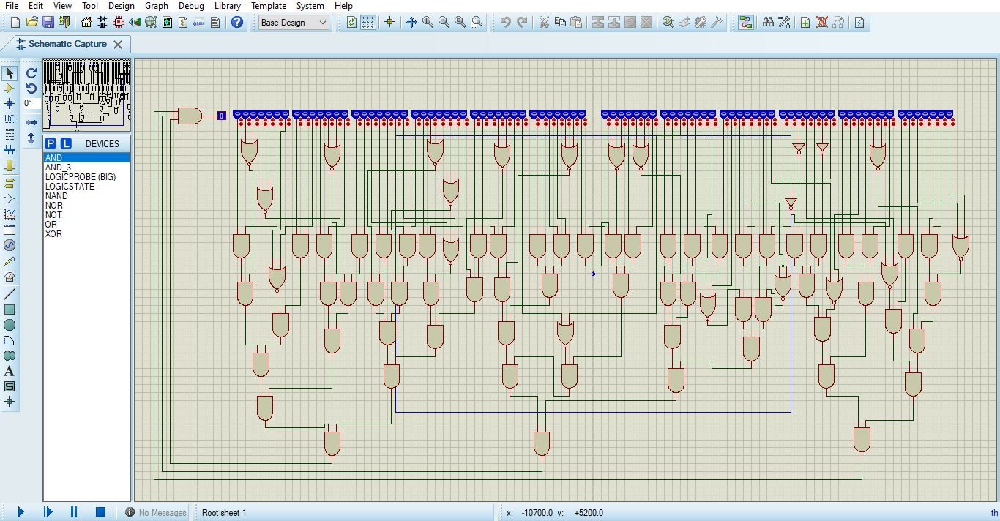
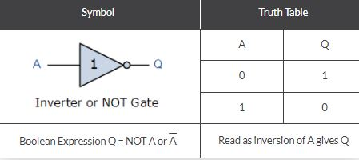
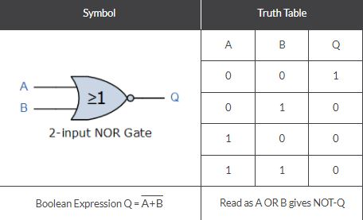
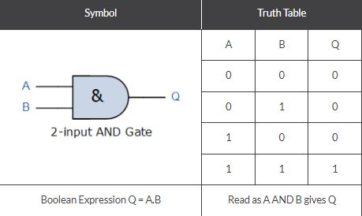

Blood Of Circuit
Hardware
This Challenge was kinda cool, it was the first time I play tasks under such Category, As you know I'm a hardware freak (◡‿◡) so i really wanted to solve this task.
Task :

> After Downloading the attached file I noticed that it has "pdsprj" as an extension, one google search and I got that it is a format used in PCB design projects.
> Luckily I already got a software called "Proteus 8" Installed on my windows PC, and that format is supported, double clicking the file got me this :
> This is a circuit obviously that has some simple gates (NOR, AND, NOT), all I needed to do to fix this circuit is making the input of those gates the right one so that i can get 1 on the output.
> Since I'm familar with gates and Circuits all I had to do is have a look at the functioning tables of those gates and swap the input bits accordingly.
> truth table of logical functions :

